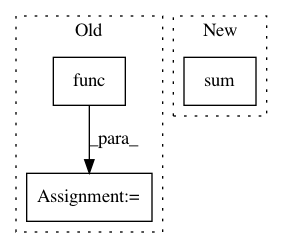

f065b29cc8667c3012761b9509886411d8095e57,starry/_core/ops/integration.py,sTReflectedGradientOp,perform,#sTReflectedGradientOp#Any#Any#Any#,142
Before Change
def perform(self, node, inputs, outputs):
b, theta, bo, ro, bsT = inputs
bb, btheta, bbo, bro = self.base_op.func(b, theta, bo, ro, bsT)
outputs[0][0] = np.reshape(bb, np.shape(inputs[0]))
outputs[1][0] = np.reshape(btheta, np.shape(inputs[1]))
outputs[2][0] = np.reshape(bbo, np.shape(inputs[2]))
outputs[3][0] = np.reshape(bro, np.shape(inputs[3]))
After Change
bb = (bsT * ddb).sum(-1)
btheta = (bsT * ddtheta).sum(-1)
bbo = (bsT * ddbo).sum(-1)
bro = (bsT * ddro).sum()
outputs[0][0] = np.reshape(bb, np.shape(b))
outputs[1][0] = np.reshape(btheta, np.shape(theta))
outputs[2][0] = np.reshape(bbo, np.shape(bo))
outputs[3][0] = np.reshape(bro, np.shape(ro))
In pattern: SUPERPATTERN
Frequency: 3
Non-data size: 3
Instances
Project Name: rodluger/starry
Commit Name: f065b29cc8667c3012761b9509886411d8095e57
Time: 2020-03-25
Author: rodluger@gmail.com
File Name: starry/_core/ops/integration.py
Class Name: sTReflectedGradientOp
Method Name: perform
Project Name: GPflow/GPflowOpt
Commit Name: 1b17dc0090dbf4cebdfe2acc9dbee06179155225
Time: 2017-08-10
Author: joachim.vanderherten@ugent.be
File Name: GPflowOpt/acquisition/mes.py
Class Name: MaxvalueEntropySearch
Method Name: binary_search
Project Name: rodluger/starry
Commit Name: 8f87f244813c98b98bbd379f973bdba0ed7a9c72
Time: 2020-04-30
Author: rodluger@gmail.com
File Name: starry/_core/ops/integration.py
Class Name: rTReflectedGradientOp
Method Name: perform